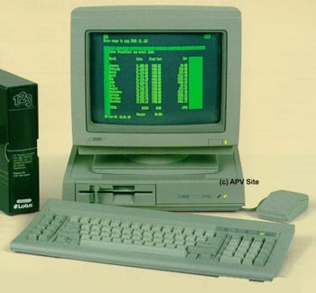

Comparision Chart
OCR'd by Curt Vendel, AHS 1998
| ATARI PC-1 | IBM XT | Bluechip PC600 | Franklin VPC | Victor 110 | Amstrad 1512 | |
| CPU | 8088 | 8088 | 8088 | 8088 | 8086 | 8086 |
| Main Processor | 4.77/8.0 MHz | 4.77 MHz | 4.77 MHz | 4.77 MHz | 4.77 MHz | 8.0 MHz |
| CoProcessor | Yes | Yes | Yes | No | Yes | Yes |
| Memory | ||||||
| Standard Memory | 512K | 256K | 512K | 512K | 640K | 512K |
| Expandable to | 640K | 640K | 640K | 640K | 640K | 640K |
| Dedicated Display RAM | 256K | 64K | N/A | 4K | N/A | 64K |
| Mass Storage | ||||||
| 51/4" Disk Drive(s) | 1 | 1 | 1 | 2 | 1 | 1 |
| Capacity | 360K | 360K | 360K | 360K | 360K | 360K |
| Video Display | ||||||
| EGA | Yes | No | No | No | No | Yes |
| CGA | Yes | No | No | Yes | No | Yes |
| Monochrome | Yes | No | No | Yes | No | No |
| Hercules | Yes | No | No | No | Yes | Yes |
| Mono Screen Max Resolution | 720 x 348 | 640 x 200 | 640 x 200 | 640 x 200 | 640 x 200 | 640 x 200 |
| Color Screen Max Resolution | 640 x 350 | 640 x 200 | 640 x 200 | 640 x 200 | 640 x 200 | 640 x 200 |
| Color Palette | 64 | 16 | 16 | 16 | 16 | 16 |
| Max on Screen | 16 | 4 | 4 | 4 | 4 | 16 |
| Parallel | Yes | No | Yes | Yes | Yes | Yes |
| RS232 Serial | Yes | No | Yes | Yes | Yes | Yes |
| Mouse Port | Yes | No | No | No | No | Yes |
| Mouse | Yes | No | No | No | No | Yes |
| Keyboard | ||||||
| Layout | XT | XT | XT | XT | XT | XT |
| Number of Keys | 84 | 84 | 84 | 84 | 84 | 84 |
The ATARI PC Advantages:
1. The ATARI PC is the best value in IBM PC clones.
2. Higher speed (8 MHz vs. 4.77 MHz) dramatically improves
performance, while the switchable feature allows the ATARI PC to run software
that is CPU speed dependent.
3. Through custom IC's, the ATARI PC provides EGA, CGA,
Hercules, and monochrome capability without costly and confusing additions.
4. The 256K dedicated display RAM makes the entire 512K
of system RAM available for programs.
5. Includes mouse and built-in mouse port.
6. Sold and supported by Atari Corporation, a multi-national
corporation with a successful history
in personal computers.
7. Flooring available through Borg Warner and ITT for
computer specialty dealers.
Printed in USA. C033401-OAl